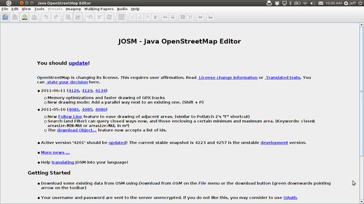

JOSM Quickstart¶
JOSM est un éditeur bureautique de données OpenStreetMap (OSM), riche en fonctionnalités, extensible, utilisable hors-ligne, écrit en Java.
Il permet le chargement de traces GPX seules et des données de trace GPX ainsi que l’édition de nodes (points), ways (lignes), tags (étiquettes sous forme clé/valeur) et relations (séquence ordonnée de points et de lignes) existants à partir de la base de données OSM. Les traces GPX sont généralement téléchargées à l’avance à partir d’un récepteur GPS ou à partir d’autres sources.
Ce guide de démarrage couvre l’utilisation de base de l’éditeur OpenStreetMap Java.
Démarrer JOSM¶
Sur le bureau, choisissez . Lorsque JOSM démarre, il ressemblera à ceci:
Charger un exemple de carte (fictive)¶
Ouvrons maintenant un exemple de fichier OSM que nous utiliserons pour apprendre les méthodes de base pour dessiner des cartes avec JOSM. Notez que cette carte n’est pas réelle, en ce qu’elle n’est pas une vraie carte d’un lieu réel, nous ne l’enregistrerons donc pas sur OpenStreetMap.
Téléchargez le fichier ici : sample.osm
Ouvrons maintenant l’exemple de fichier de carte dans JOSM. Cliquez sur le bouton « Ouvrir » en haut à gauche.

Recherchez le fichier sample.osm. Il se trouve probablement dans votre dossier Téléchargements, à moins que vous ne l’ayez enregistré ailleurs.
Cliquez dessus, puis cliquez sur « Ouvrir ». Vous devriez maintenant voir un exemple de carte qui ressemble à ceci :

Note
Vous utiliserez ces données afin d’essayer diverses techniques d’édition. Vous ne devez cependant jamais télécharger ces données fictives dans la base de données.
Naviguez dans la carte¶
Pour déplacer la carte vers la gauche ou la droite, vers le haut ou vers le bas, maintenez le bouton droit de la souris enfoncé et déplacez votre souris.
Il existe plusieurs façons d’effectuer un zoom avant et arrière sur la carte. Si vous avez une souris, vous pouvez utiliser votre molette pour effectuer un zoom avant et arrière. Si vous utilisez un ordinateur portable et que vous n’avez pas de souris, vous pouvez effectuer un zoom avant et arrière à l’aide de la barre d’échelle en haut à gauche de la fenêtre de la carte. Faites glisser la barre vers la gauche et la droite en maintenant votre souris gauche enfoncée et en déplaçant la barre vers la gauche ou la droite avec votre souris.

Look at the sample map. There a few different types of objects here. There is a river, a forest, some buildings, several roads, and a couple of shops. To select an object, click on it with your left mouse button.
Points, lines, and shapes¶
As you click different objects on the sample map, notice that there are three different types of objects on the map. There are points, lines, and shapes.
Points are a single location, represented by symbols. On this sample map, there are two points, a shoe shop and a supermarket. The shoe shop is represented by a shoe symbol, and the market is represented by a shopping cart.
There are several lines on the map as well, which represent roads. If you look closely you will see that within the lines, there are points as well. These points don’t have any symbols or other information associated with them, but they help to define where the line is located.
Lastly, there are numerous shapes on the sample map, representing different places - a forest, a river, a park, and buildings. A shape is used to represent an area, like a field or a building. A shape is exactly like a line - the only difference is that the line begins at the same point where it ends.
It’s easy to think of a map as containing these three basic types of objects - points, lines, and shapes. In OpenStreetMap there is special terminology which you will come to learn as you progress. In OSM, points are actually called nodes, and lines are called ways. A shape is called a closed way because it is just a line that ends at the same point where it begins.
You may notice that when you select an object, a list appears to the right of the map in a window called “Properties”. These are known as tags. Tags are information that is tied to a point, line or shape that describes what it is. We’ll learn more about tags in a later chapter. For now all you need to know is that this information helps describe whether our object is a forest, a river, a building, or something else.
Think about drawing a map by hand, and how you are also drawing points, lines, and shapes. What other places are best represented by points? Lines? Shapes?
Changing objects¶
Select the forest on the left side of the map. Be sure to click on the line around the forest, not one of the points on the line.
Now hold your left mouse button down and drag your mouse. You should be able to move the forest to a new location on the map.
Click on one of the points on the line around the forest. Hold your left mouse button down and drag your mouse. You should be able to move the point. This is how you can change the shape of an object, or move a point.
Drawing¶
On the left side of JOSM is a column of buttons. Many of these buttons open new windows on the right side that provide more information about the map. The most important buttons, however, are at the top of these column. These buttons change what you can do with your mouse.
The top buttons in this column are the ones you will use the most. They are used for selecting objects and for drawing new ones.
Until now, you have been using the Select tool, which looks like this:

Before you draw, you need to make sure that nothing is selected.
Click in the black space on the map, where it is empty, to make sure nothing is selected.
Click on the second button, the Draw tool.

Find an empty area on the map, and double-click with your mouse. This will draw a single point.
To draw a line, single-click with your mouse. Move your mouse and click again. Continue until you are happy with your line. To end the line, double-click your mouse.
Draw a shape the same way that you draw a line, but finish the shape by double-clicking on the point where you started the line.
Add presets¶
Now we know how to draw points, lines and shapes, but we still haven’t defined what they represent. We want to be able to say that our points are shops, schools, or something else, and whether our shapes are fields, buildings, or something else.
Click on the Select tool, in the column of buttons on the left.
Select one of the objects that you drew with the Draw tool.
On the top menu, click “Presets” and choose the type of location you would like to define.
When you choose on a preset, a form will pop up asking you for more information. You do not have to fill in every field, but you may wish to add some of the important fields, such as the name of the object.
When you are finished entering the information, click “Apply Preset”. If everything went well, your point, line, or shape should change colors or show a symbol. This is because you have defined what it is.
Draw your own map¶
Now let’s draw a map in order to practice the techniques you have learned. You may wish to redraw the map that you drew on paper previously.
Drag the map away from the sample map. Hold the right mouse button and drag your mouse, until you have a nice empty area to draw on.
Use the Draw tool to create points, lines, and shapes. Describe what your objects are by selecting from the Presets menu.
When you are finished, you should have your own map, similar to the sample map that we opened in sample.osm.
Remove the sample layer¶
Once you feel comfortable with these basic editing techniques you might want to turn your attention to mapping real features.
Note
It is very important that you first remove the layer with the sample data. These data are fictitious and must not be uploaded to the OpenStreetMap database (newer JOSM releases automatically prevent this).
In the Layers window on the upper right of the screen select the sample.osm layer. Then click on the trash can icon in the lower right corner of that window. Alternatively you can choose delete from the context menu of the layer.
Ensuite ?¶
Try the LearnOSM documentation, from which this quickstart was derived: https://learnosm.org/en/josm/start-josm/
In order to continue editing you first need to download real data. This is explained in the next chapter: https://learnosm.org/en/josm/more-about-josm/
Website: https://josm.openstreetmap.de/